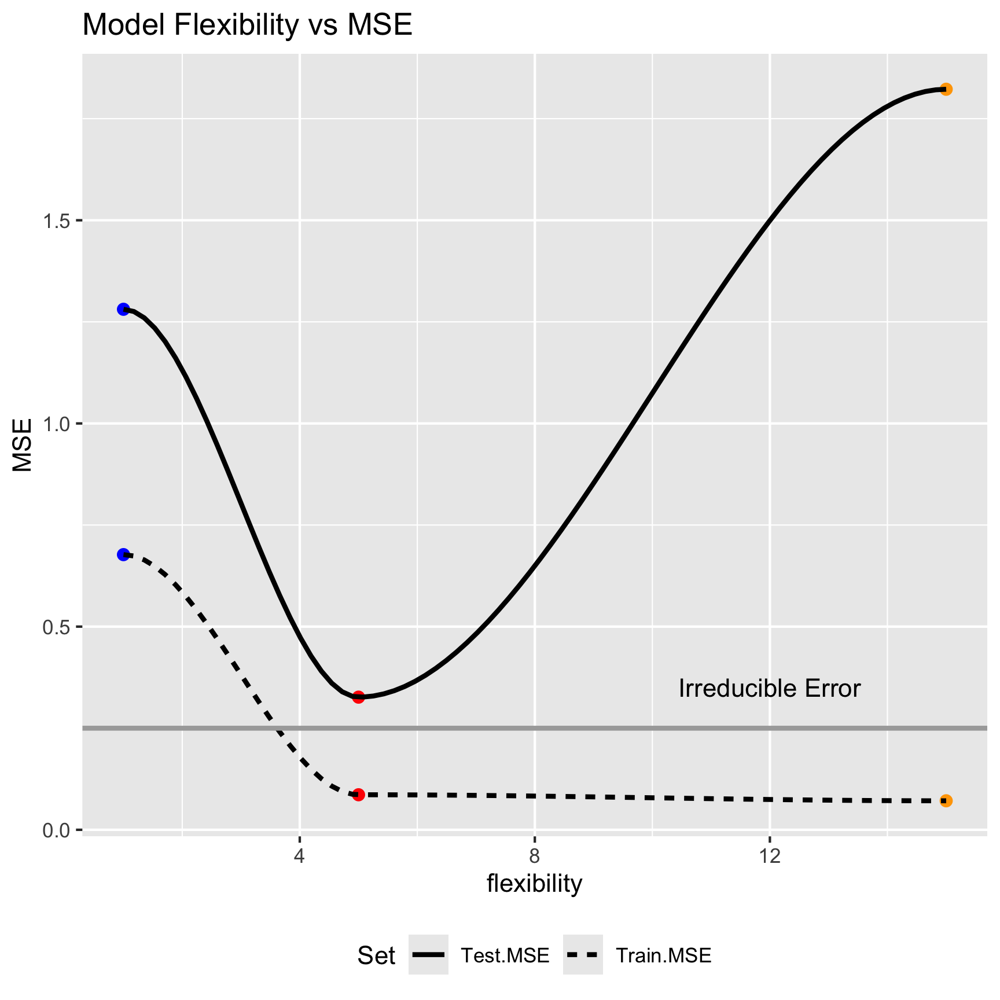
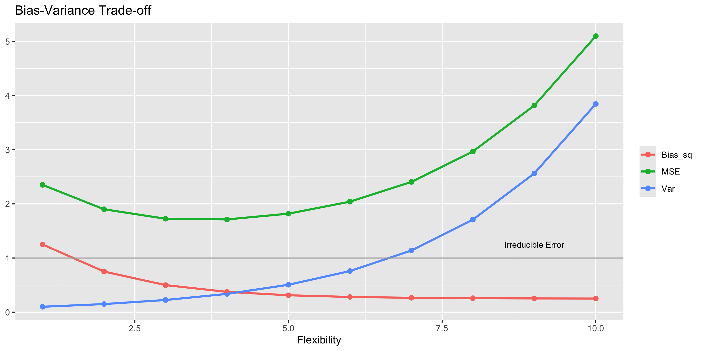
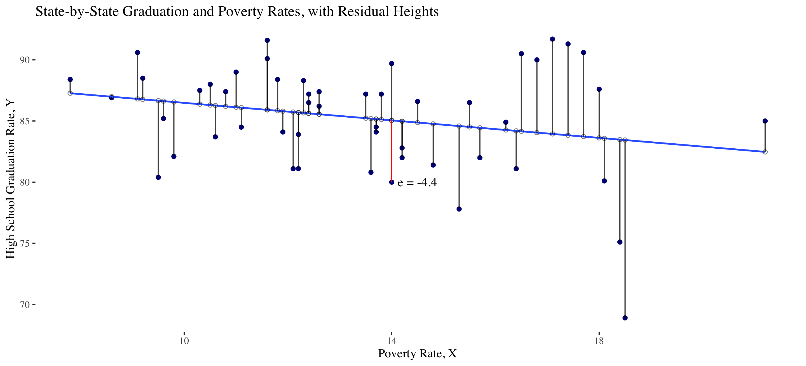
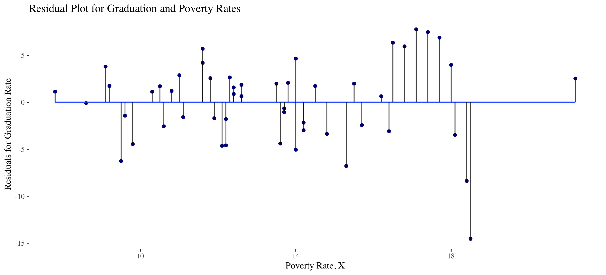
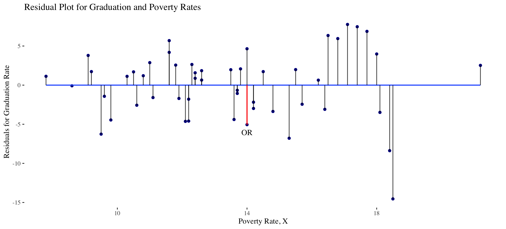
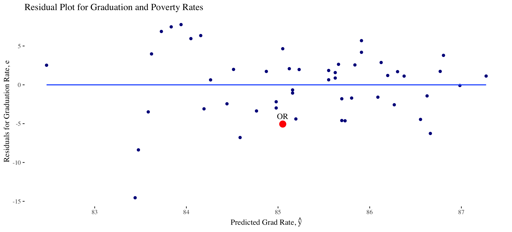

| model | Train.MSE | Test.MSE |
|---|---|---|
| Linear | 0.677 | 1.281 |
| Quintic | 0.086 | 0.326 |
| Poly | 0.071 | 1.822 |

Linear Regression
Grayson White
Stat 243
Week 2 | Fall 2026
Goals for Today (and next time)
Today:
- Wrap up the bias-variance trade-off from last time.
- Start linear regression.
Next Week:
- More linear regression!
Recall from last time
Train vs Test MSE

Bias-Variance Trade-off
Training vs Test MSE
Suppose we consider a variety of model shapes to predict \(Y\), with each model of increasing flexibility / complexity.
- What happens to the training MSE and the test MSE as model flexibility / complexity increases?
- As model flexibility / complexity increases, training MSE will decrease, but test MSE might not.
- Flexible / complex models may overfit data, meaning they fit patterns from the random error (noise), rather than the true model (signal)
- This leads to low train MSE, but high test MSE
- On the other hand, inflexible / simple models may be too rigid to fit the true pattern (lack the fidelity to convey signal)
- This may lead to high train MSE and high test MSE
MSE Decomposition
The U-curve for test MSE is a result of competition between two sources of error in a model
Expected test MSE can be decomposed as the sum of 3 quantities: \[ \mathrm{E} \left[ ( y_0 - \hat{f}(x_0))^2 \right] = \left[\mathrm{Bias}(\hat{f}(x_0))\right]^2 + \mathrm{Var}(\hat{f}(x_0)) + \mathrm{Var}(\epsilon) \]
Here \(\mathrm{E} \left[ ( y_0 - \hat{f}(x_0))^2 \right]\) denotes expected test MSE at \(x_0\), if many models for \(f\) were built using a variety of random training data sets containing \(x_0\)
Total expected test MSE is obtained by averaging across all possible \(x_0\) in the test set.
A proof is given in Section 7.3 of The Elements of Statistical Learning.
To minimize \(\mathrm{MSE}\), we need to simultaneously minimize both variance and bias.
Bias and Variance
- Variance refers to the amount of variability in \(\hat{f}(x_0)\) across random training sets containing \(x_0\)
- What type of models tend to have low/high variance?
- Bias refers to amount by which \(\hat{f}(x_0)\) differs from the true value of \(f(x_0)\), on average across random training sets.
- Bias is produced by the difference between model shape assumptions and reality
- What type of models tend to have low/high bias?
Bias-Variance Trade-off

Bias-Variance Trade-off
Q: What happens as we pick more complex models?
As complexity increases, we tend to “overfit” model to training data.
Bias decreases and variance increases
We want a sufficiently complex model that doesn’t overfit training data.
- How we actually do this is a major theme of this course!
Linear Regression
Linear Regression
- Suppose we have one or more predictors \((x_1, x_2, \dots , x_p)\) and a quantitative response variable \(y\), and that \[ y = f(x_1, \dots, x_p) + \epsilon \]
- The function \(f\) could theoretically take many forms. But the simplest form assumes \(f\) is a linear function: \[ f(x_1, x_2, \dots , x_p) = \beta_0 + \beta_1 x_1 + \dots + \beta_p x_p \]
- Note: a change in \(f\) is constant per unit change in any of the inputs.
(Simple) Linear Regression
If \(Y\) depends on only 1 predictor \(X\), then the linear model reduces to
\[ y = f(x) = \beta_0 + \beta_1 x + \epsilon \]
- We’ll use Simple Linear Regression (SLR) to build intuition about all linear models
Approximations and Estimates
In reality, the relationship \(f\) between \(Y\) and \(x_1, \dots, x_p\) may not be linear
But many functions can be well-approximated by linear ones (especially when inputs are restricted to a small range)
But even if \(f\) is truly linear, we still have problems: We do not know the parameters of the linear model.
- Based on data, we estimate the parameters to create an estimated linear model
\[ \hat{y} = \hat{f}(x_1,~\cdots,~x_p) = \hat{\beta}_0 + \hat{\beta}_1 x_1 + \dots + \hat{\beta}_px_p \]
- So we are estimating an approximation to a relationship between response and predictors.
SLR Review
Consider the relationship between a state’s high school grad rate \(y\) and its poverty rate \(x\).
- Suppose we want to model \(y\) as a function of \(x\)
- Let’s assume a linear relationship \[ y = \beta_0 + \beta_1 x + \epsilon \]
- Fitted Model: \[ \hat{y} = \hat{\beta}_0 + \hat{\beta}_1 x = 90 -0.4 x\]
SLR Review
Consider the relationship between a state’s high school grad rate \(y\) and its poverty rate \(x\).
- Suppose we want to model \(y\) as a function of \(x\)
- Let’s assume a linear relationship \[ y = \beta_0 + \beta_1 x + \epsilon \]
- Fitted Model: \[ \hat{y} = \hat{\beta}_0 + \hat{\beta}_1 x = 90 -0.4 x\]
Model Predictions
- Model: \[\hat{y} = 90 - 0.4\cdot x \]
- Oregon has a poverty rate of 14. What does the model predict is Oregon’s graduation rate?
\[ \hat{y} = 90 - 0.4 \cdot 14 = 84.4 \]
- How should we interpret this prediction?
Coefficient Interpretation
\[\begin{align*} \hat{y} &= \hat{\beta}_0 + \hat{\beta}_1 \times x_{povertyrate} \\ &= 90 - 0.4 \times x_{povertyrate} \end{align*}\]
We need to be precise and careful when interpreting estimated coefficients!
Intercept: We expect/predict \(y\) to be \(\hat{\beta}_0\) on average when \(x = 0\).
Slope: For a one-unit increase in \(x\), we expect/predict \(y\) to change by \(\hat{\beta}_1\) units on average.
These interpretations are non-specific to the context of our model, but when we are interpreting coefficients, we always need to interpret the coefficients in context
Coefficient Interpretation: In Context
\[\begin{align*} \hat{y} &= \hat{\beta}_0 + \hat{\beta}_1 \times x_{povertyrate} \\ &= 90 - 0.4 \times x_{povertyrate} \end{align*}\]
Intercept: We expect/predict a state’s graduation rate to be 90% on average when their poverty rate is 0.
Slope: For a one-unit increase in poverty rate, we expect/predict the graduation rate of a state to decrease by 0.4% on average.
Model Predictions
- Model: \[\hat{Y} = 90 - 0.4\cdot X \]
- Oregon has a poverty rate of 14. What does the model predict is Oregon’s graduation rate? \[ \hat{Y} = 90 - 0.4 \cdot 14 = 84.4 \]
- But Oregon’s actual graduation rate is 80, not 84.4
Residuals
Residuals are the leftover variation in the data after accounting for model fit.
Each observation \((X_i, Y_i)\) has its own residual \(e_i\), which is the difference between the observed (\(Y_i\)) and predicted (\(\hat{Y}_i\)) value: \[e_i = Y_i - \hat{Y}_i\]

- Oregon’s residual is \[e = Y - \hat{Y} = 80 - 84.4 = -4.4\]
Residual Plot
To visualize the degree of accuracy of a linear model, we use residual plots:

- Points preserve original \(x\)-position, but with \(y\)-position equal to residual.
Residual Plot
To visualize the degree of accuracy of a linear model, we use residual plots:

- Points preserve original \(x\)-position, but with \(y\)-position equal to residual.
Residual Plot
In many cases, it is more convenient to look at the residual plot of residuals vs fitted values (instead of vs \(X\))

- This residual plot can still be used to determine accuracy of model, but can be used when we have more than 1 predictor.
Residual Sum of Squares
- Define the Residual Sum of Squares (RSS) as \[ \mathrm{RSS} = \sum_{i=1}^n (y_i - \hat y_i)^2 = e_1^2 + \dots + e_n^2 \]
- Q: How is \(\mathrm{RSS}\) related to \(\mathrm{MSE}\)?
- A: \(\mathrm{RSS} = n \cdot \mathrm{MSE}\).
- Using calculus or linear algebra, we can show that \(\mathrm{RSS}\) is minimized when \[ \hat{\beta}_1 = \frac{\sum_{i=1}^n (x_i - \bar{x})(y_i - \bar{y})}{\sum_{i=1}^n(x_i - \bar{x})^2} \qquad \hat{\beta}_0 = \bar{y} - \hat{\beta}_1 \bar{x} \]
- We prove this in Math 392!
Residual Sum of Squares
Since
\[ \hat{\beta}_1 = \frac{\sum_{i=1}^n (x_i - \bar{x})(y_i - \bar{y})}{\sum_{i=1}^n(x_i - \bar{x})^2} \qquad \hat{\beta}_0 = \bar{y} - \hat{\beta}_1 \bar{x} \]
minimizes the RSS, the least squares regression line has the lowest training MSE among all linear models.
- Q: Does this mean it has the lowest test MSE among linear models?
- A: No, as we will see later with penalized regression (Ch 6, ISLR)
Measuring Model Accuracy (Alphabet Soup)
The following (closely related) measures are used to assess accuracy of a linear model:
- Residual Sum of Squares, Mean Squared Error and Root Mean Squared Error: \[ \textrm{RSS} = \sum_{i =1}^n (y_i - \hat y_i)^2 \qquad \textrm{training MSE} = \frac{\textrm{RSS}}{n} \qquad \textrm{RMSE} = \sqrt{\textrm{MSE}} \]
Residual Standard Error (RSE or \(\hat \sigma\)) \[ \hat \sigma = \textrm{RSE} = \sqrt{\frac{1}{n-p - 1}\textrm{RSS}} = \sqrt{\frac{n}{n-p-1}} \textrm{RMSE} \]
RSE is an estimate of the standard deviation \(\sigma\) of model error \(\epsilon\)
RSE measures the typical size of model errors
Note that \(p = 1\) for simple linear regression.
Measuring Model Accuracy (Alphabet Soup)
The following (closely related) measures are used to assess accuracy of a linear model:
The coefficient of determination \(R^2\) \[ R^2 = 1- \frac{\sum_{i=1}^n(y_i - \hat y_i)^2}{\sum_{i=1}^n(y_i - \bar y)^2} = 1 - \frac{\textrm{RSS}}{\textrm{TSS}} \]
\(R^2\) is the proportion of variation in the response explained by the model.
- Adjusted \(R^2\)
\[\begin{align*} \mbox{adj} R^2 &= 1- \frac{\sum_{i=1}^2 (y - \hat{y})^2}{\sum_{i=1}^n (y - \bar{y})^2} \left(\frac{n - 1}{n - p - 1} \right) = 1 - \frac{\textrm{RSS}}{\textrm{TSS}} \left(\frac{n - 1}{n - p - 1} \right) \end{align*}\]
where \(p\) is the number of explanatory variables in the model.
Measuring Model Accuracy (Alphabet Soup)
The following (closely related) measures are used to assess accuracy of a linear model:
\[ R^2 = 1- \frac{\sum_{i=1}^n(y_i - \hat y_i)^2}{\sum_{i=1}^n(y_i - \bar y)^2} = 1 - \frac{\textrm{RSS}}{\textrm{TSS}} \]
\[\begin{align*} \mbox{adj} R^2 &= 1- \frac{\sum_{i=1}^2 (y - \hat{y})^2}{\sum_{i=1}^n (y - \bar{y})^2} \left(\frac{n - 1}{n - p - 1} \right) = 1 - \frac{\textrm{RSS}}{\textrm{TSS}} \left(\frac{n - 1}{n - p - 1} \right) \end{align*}\]
where \(p\) is the number of explanatory variables in the model.
- Q: Why might we prefer \(R^2\) over adjusted \(R^2\) or vice versa?
Next Week
- Inference for linear models
- Linear model diagnostic plots
- Multiple linear regression (MLR)
- Extensions of MLR